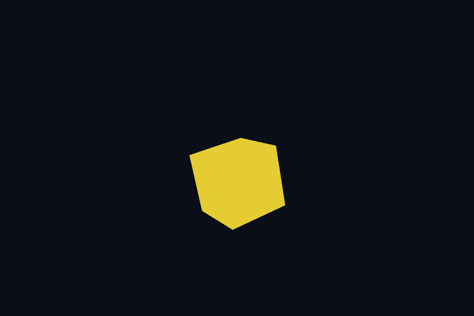

第 29 课：离屏 MSAA 与 Resolve
课程首页 · 上一课 · 下一课
目标与运行
cmake --preset opengl
cmake --build --preset opengl-debug --target 29_msaa --parallel 4
.\OpenGL\build\bin\Debug\29_msaa.exe
预期画面：旋转方块的斜边经过 4× MSAA；空格关闭多重采样作对照。
相机：W/A/S/D 移动，Q/E 升降，按住右键转向，Esc 退出。
代码阅读顺序
Multisample 的 multisample renderbuffer → glBlitFramebuffer → screen pass
从本课 main.cpp 进入；公共工具在 common，GLSL 在 shaders。先画出每一遍读什么、写什么，再逐个展开辅助类。
原理与实现
MSAA 为每像素保留多个覆盖/深度样本，主要改善几何边缘。它不会自动消除 shader 高频纹理、法线噪声或高光闪烁。此课创建自定义多采样 FBO，比仅请求窗口 GLFW_SAMPLES 更能看清离屏渲染流程。
颜色和深度/模板附件都使用相同 sample count，最多四个并受 GL_MAX_SAMPLES 限制。附件大小和样本数必须兼容，否则 FBO 不完整。缩放窗口时同步重新分配。
普通 sampler2D 不能直接采样多重采样 renderbuffer，所以使用 READ_FRAMEBUFFER=MSAA，DRAW_FRAMEBUFFER=单采样 resolved，再用 glBlitFramebuffer 进行 resolve。这里颜色同尺寸、GL_NEAREST，避免把不允许的缩放/过滤规则混进初学例子。
Resolve 后的纹理可以像其他后处理图像一样采样。若需要自行访问每个样本，可以使用 multisample texture 和 sampler2DMS，本课用 renderbuffer 保持结构简单。
修改练习
查询并显示可用样本数；请求 2× 与 4× 比较；将窗口缩小观察几何边缘。
修改后重新执行 cmake --build --preset opengl-debug --target 29_msaa --parallel 4。GLSL、模型、图片会复制到程序旁的 shaders/assets 目录。源文件应修改教程根目录下的版本，运行目录的副本会被下一次构建覆盖。
自测与参考答案
MSAA 能解决低分辨率纹理被斜着看时的闪烁吗？
主要不能，该问题通常需要 mipmap、各向异性过滤和正确采样策略。
检查与排错
运行 29_msaa.exe --smoke 可执行确定时间的四帧渲染检查。重要技术开关还可用 --smoke --variant --capture 与默认抓图对比。共享工具会检查 GL 错误、非背景像素和图像动态范围，但这不能代替人工核对技术含义。参见 进阶排错。
参考截图
以下为课程自带素材、固定时间 1 秒时的实际渲染；你的相机与操作改变后画面会不同。

查看按住空格时的对照图
深入学习：数据、接口与执行
多样本 FBO 的颜色/深度使用相同样本数，resolve 写入单样本纹理再显示。看斜边而不是只看模型中心，才能观察几何覆盖的变化。
配套精讲：三 API 对照 · 目标、深度与 MSAA。先读概念与参数选择，再返回本课实现核对，不必一次展开所有公共类。
本课的真实源码切片
来自 OpenGL/lessons/29_msaa/main.cpp，第 5—30 行；这是现有实现的局部摘录，末尾可能处于函数中间，不是可单独编译的完整程序。
int main(int argc, char** argv) try {
App app(argc, argv, "29_msaa - OpenGL Course");
Multisample msaa;
RenderTarget resolved(1, false);
Mesh box(cube()), plane(quad(), quadIndices());
Shader shader(app, "advanced.vert", "solid.frag"), screen(app, "screen.vert", "screen.frag");
Camera camera;
while (app.begin()) {
if (app.width < 1 || app.height < 1) {
app.end();
continue;
}
camera.update(app);
resolved.resize(app.width, app.height);
msaa.resize(app.width, app.height);
glBindFramebuffer(GL_FRAMEBUFFER, msaa.fbo);
glEnable(GL_DEPTH_TEST);
if (app.key(GLFW_KEY_SPACE) == GLFW_PRESS)
glDisable(GL_MULTISAMPLE);
else
glEnable(GL_MULTISAMPLE);
app.clear();
shader.use();
cameraUniforms(shader, app, camera);
shader.set("model", glm::rotate(glm::mat4(1), .6f, glm::vec3(.2f, 1, .4f)));
shader.set("baseColor", glm::vec3(.9f, .8f, .2f));
同主题跨 API 导航
以下是同主题参考；场景、功能完成度和版本基线可能不同，具体边界见对照章节。
先预测，再验证
MSAA 打开后远处纹理仍闪烁，是 resolve 一定坏了吗？
参考推导：不一定。MSAA 主要改善覆盖边缘，纹理缩小过滤和 shader 高频仍需 mip 等方法处理。
在一次实验中只改一个因素，记录预测、实际画面/日志和原因。检查已有 smoke 是否仍通过；图形调试器里再核对本次 draw 的实际输入/输出，不能仅凭进程正常退出下结论。